NPG Lite - Explorer Pack#
Explorer Pack adalah kit tingkat pemula yang dirancang untuk memulai dengan ekosistem NPG Lite. Ini menyediakan semua yang Anda butuhkan untuk akuisisi sinyal bio-potensial dan eksperimen, termasuk Proto Playmate untuk prototyping kustom. Baik Anda pemula, pendidik, atau penggemar, paket ini memungkinkan Anda untuk dengan cepat mengatur dan mulai menjelajahi EEG, EMG, ECG, dan lainnya.
👉🏻 Dapatkan milik Anda di CrowdSupply: Neuro PlayGround Lite

Neuro PlayGround Lite Explorer Pack#
Isi kit#
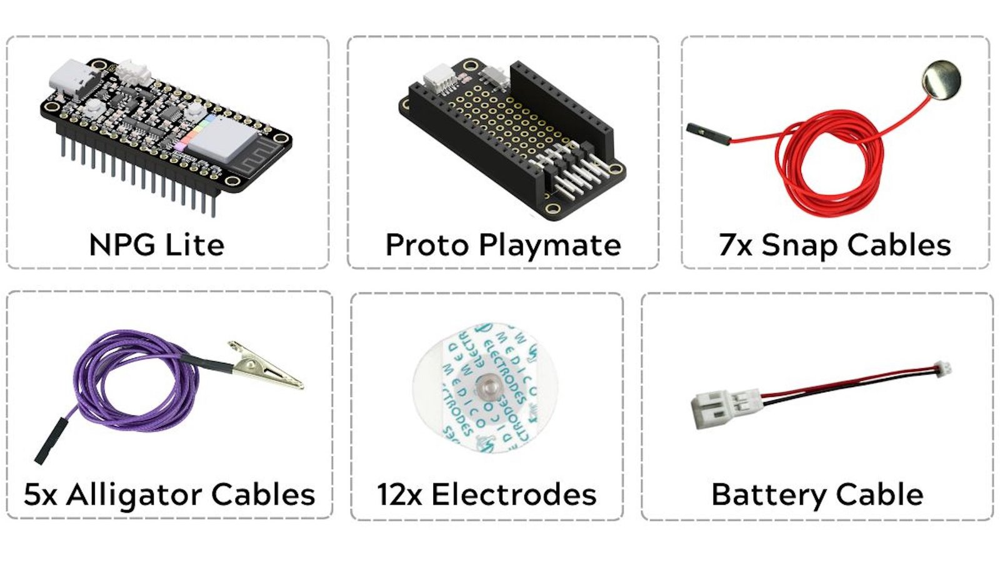
Kit Contents of NPG Lite Explorer Pack#
Kit Contents |
Qty |
|---|---|
NPG Lite Board |
1 |
Proto Playmate |
1 |
Snap Cables |
7 |
Alligator Cables |
5 |
Gel Electrodes |
12 |
Battery Connector (Battery not included) |
1 |
Proto Playmate#
Proto Playmate menawarkan ruang prototipe fleksibel dengan area khusus untuk menambahkan komponen atau sirkuit Anda sendiri. Ini termasuk port QWIIC untuk integrasi sensor cepat, pin header elektroda 2.54 mm, saklar geser ON/OFF, dan antarmuka konektor untuk elektroda. Dengan menggabungkan elektroda dengan elektronik kustom, pengguna dapat dengan cepat membuat prototipe eksperimen yang didorong sinyal bio-potensial, membangun sirkuit add-on, atau menguji desain baru tanpa memerlukan breadboard terpisah.
Menggunakan Kit#
Kit ini membuat proyek neurosains kustom dapat diakses, memungkinkan pemula untuk segera mulai merekam sinyal biopotensial dan secara fleksibel mengintegrasikan sirkuit mereka sendiri untuk aplikasi HCI/BCI yang menarik. Proto Playmate dengan mudah terhubung ke papan NPG Lite, menyediakan ruang prototipe fleksibel untuk menambahkan komponen kustom, sirkuit, atau menguji desain baru tanpa wiring yang rumit atau memerlukan breadboard terpisah.
Langkah 1: Persiapan Kulit#
Oleskan Gel persiapan kulit Nuprep pada area target di mana Elektroda akan ditempatkan → Gosok dalam gerakan melingkar → Bersihkan dengan alkohol swab atau tisu basah.
Untuk informasi lebih lanjut, silakan periksa langkah demi langkah detail Panduan Persiapan Kulit.
Langkah 2: Hubungkan Kabel BioAmp#
Menggunakan Proto Anda dapat merekam sinyal biopotensial 3-saluran, hubungkan kabel snap sesuai dengan jumlah saluran yang diperlukan:
{kind=link}
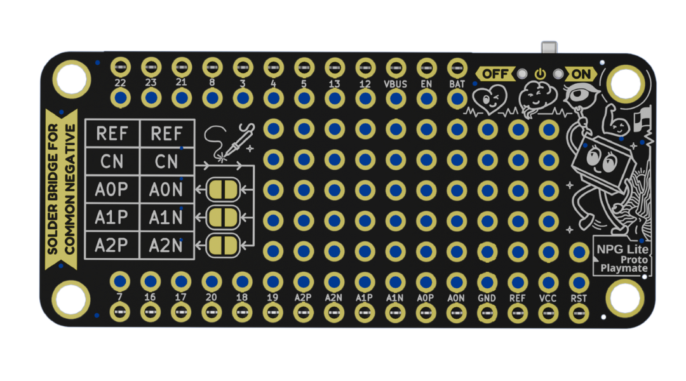
Belakang Proto Playmate NPG Lite#
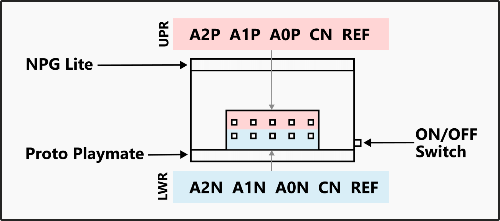
Koneksi Proto Playmate NPG Lite#
Saluran |
Pin |
Koneksi Saluran |
|---|---|---|
Channel 0 |
A0P |
+ve of Channel 0 |
A0N |
-ve of Channel 0 |
|
Channel 1 |
A1P |
+ve of Channel 1 |
A1N |
-ve of Channel 1 |
|
Channel 2 |
A2P |
+ve of Channel 2 |
A2N |
-ve of Channel 2 |
|
REF |
Reference cable to REF |
|
CN |
Common Negative |
Menggunakan Common Negative (CN)#
Common Negative (CN) adalah fitur penting, terutama saat melakukan perekaman multi-saluran seperti EEG, karena menyederhanakan penempatan elektroda dan wiring.
Untuk mengkonfigurasi saluran agar menggunakan Common Negative, ikuti langkah-langkah berikut:
Pilih Saluran Anda: Tentukan saluran BioAmp mana (A0, A1, A2) yang ingin Anda bagikan elektroda negatif.
Solder Bridge: Cari bridge solder kecil yang diberi label ‘CN’ di sebelah pin negatif saluran (A0N, A1N, A2N).
Buat Common: Anda harus menyolder bridge ini tertutup. Ini secara fisik menghubungkan input negatif saluran itu ke garis Common Negative utama.
Hubungkan Elektroda Bersama: Hubungkan kabel snap elektroda negatif tunggal Anda ke pin CN khusus.
Sederhanakan Wiring: Untuk saluran apa pun yang dikonfigurasi dengan cara ini, Anda tidak lagi perlu menghubungkan elektroda ke pin input negatif yang sesuai (misalnya, A0N, A1N, atau A2N).
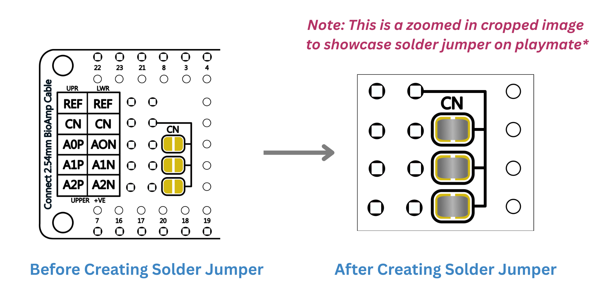
Common Negative Proto Playmate NPG Lite#
Langkah 3: Tempatkan Elektroda Gel#
EMG (Electromyography)#
1-CH Setup: Tempatkan kabel +ve dan -ve dari Saluran 0 pada otot target dan kabel REF pada bagian tulang (belakang telapak tangan atau siku).
2-CH Setup: Tempatkan kabel +ve, -ve dari Saluran 0 & 1 pada otot target dan 1 kabel REF pada bagian tulang.
3-CH Setup: Tempatkan kabel +ve, -ve dari Saluran 0, 1 dan 2 pada otot target dan 1 kabel REF pada bagian tulang.
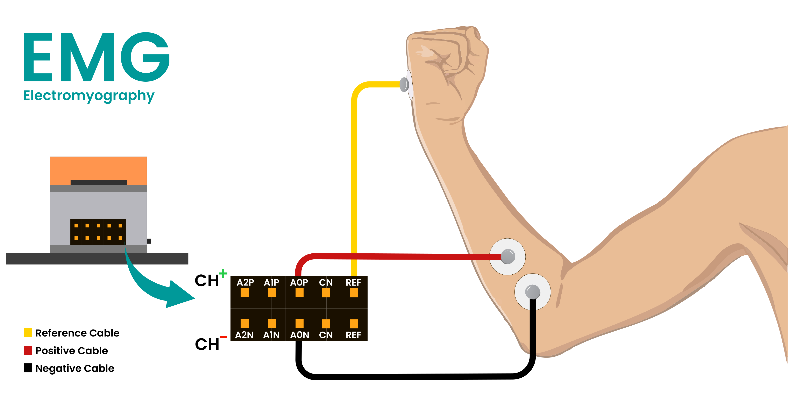
Koneksi untuk EMG#
ECG (Electrocardiography)#
1-CH Setup: Tempatkan kabel -ve dari Saluran 0 di sisi kiri dada, kabel +ve tepat di sebelah kanannya, dan kabel REF di sisi kanan dada.
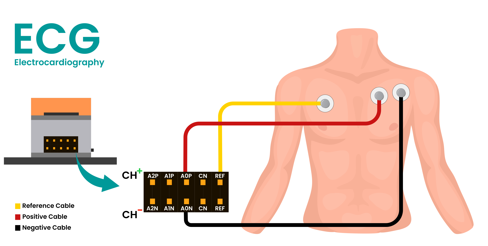
Koneksi untuk ECG#
EOG (Electrooculography)#
Perekaman Gerakan Horizontal
1-CH Setup: Tempatkan kabel -ve dari Saluran 0 di sisi kanan mata kanan Anda, kabel +ve di sisi kiri mata kiri, dan kabel REF pada bagian tulang di belakang cuping telinga Anda.
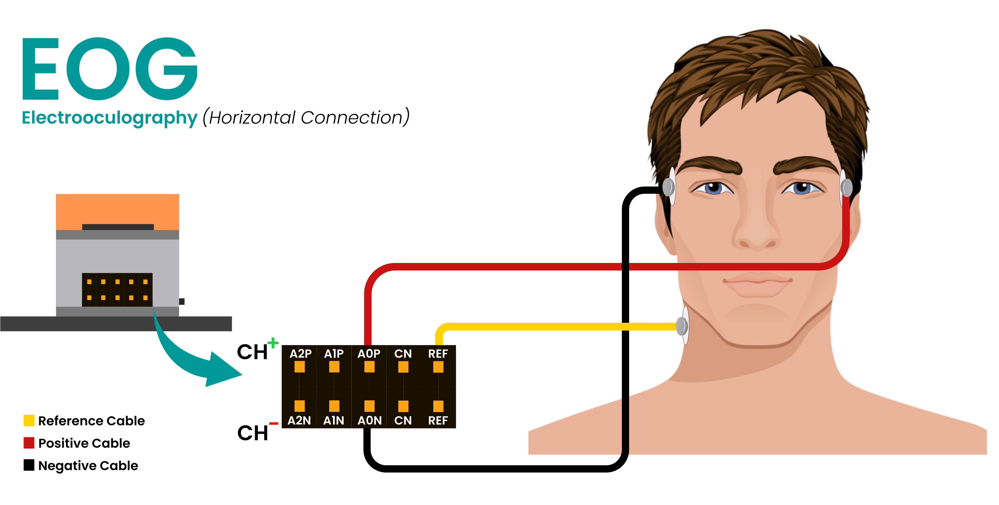
Koneksi untuk EOG Horizontal#
Perekaman Gerakan Vertikal
1-CH Setup: Tempatkan kabel -ve dari Saluran 0 di atas salah satu mata Anda, elektroda +ve di bawah mata yang sama, dan kabel REF pada area tulang di belakang cuping telinga Anda.
2-CH Setup: Untuk merekam gerakan mata horizontal & vertikal bersama-sama, ikuti penempatan elektroda yang disebutkan di atas untuk Saluran 0 dan 1. Pastikan menggunakan hanya 1 kabel REF.
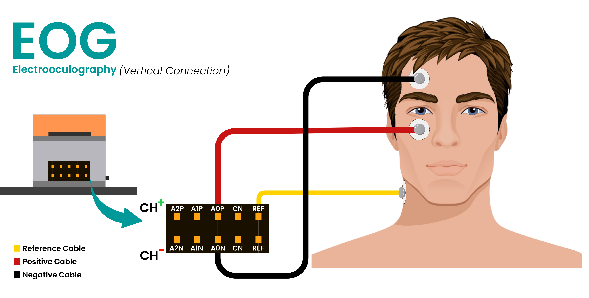
Koneksi untuk EOG Vertikal#
EEG (Electroencephalography)#
1-CH Setup: Tempatkan kabel +ve dari Saluran 0 pada area target, kabel REF dan -ve pada bagian tulang di belakang setiap cuping telinga. (lihat Sistem Internasional 10-20 untuk merekam EEG)
2-CH Setup: Tempatkan kabel +ve dari Saluran 0 dan 1 pada area target (lihat Sistem Internasional 10-20 untuk merekam EEG), 1 kabel REF dan 1 kabel CN (Common Negative) pada bagian tulang di belakang setiap cuping telinga. Pastikan sambungan solder common negative dilakukan untuk saluran masing-masing sesuai, seperti informasi yang disediakan di atas.
3-CH Setup: Tempatkan kabel +ve dari Saluran 0, 1, dan 2 pada area target (lihat Sistem Internasional 10-20 untuk merekam EEG), 1 kabel REF, dan 1 kabel CN (Common Negative) pada bagian tulang di belakang setiap cuping telinga. Pastikan sambungan solder common negative dilakukan untuk saluran masing-masing sesuai, seperti informasi yang disediakan di atas.
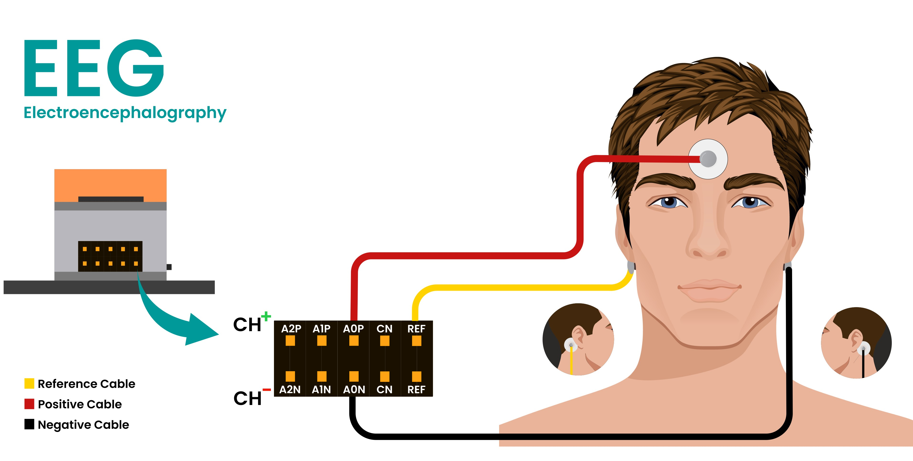
Koneksi untuk EEG#
Langkah 4: Unggah Firmware#
Ikuti langkah cepat di bawah ini untuk mengunggah firmware ke perangkat NPG Lite Anda:
Untuk panduan unggah firmware detail, kunjungi: Cara Flash Firmware pada NPG Lite
Nyalakan NPG Lite dengan memutar saklar on/off.
Hubungkan ke Laptop/PC melalui kabel USB-C.
Unduh NPG Lite Flasher dan jalankan aplikasi.
Pilih jenis firmware, pilih port Anda, dan flash pada NPG Lite Anda.
Untuk koneksi WiFi atau BLE, lepaskan kabel USB-C dan aktifkan Bluetooth atau Wi-Fi pada laptop Anda berdasarkan Firmware yang diunggah.
Langkah 5: Memvisualisasikan sinyal#
Ikuti langkah di bawah ini untuk melihat data sinyal biopotensial real-time dari perangkat NPG Lite Anda:
Pergi ke Chords Web
Klik pada
Visualize Now, navigasi keNPG-Lite, tekan tombolConnectdan pilih perangkat Anda.Anda dapat melihat sinyal biopotensial secara real-time.
Untuk panduan detail, kunjungi: Dokumentasi Chords Web
Jelajahi fitur seperti play/pause data stream, terapkan filter, tingkatkan jumlah saluran, aktifkan fitur untuk merekam dan mengunduh data dalam format CSV.
Panduan Koneksi Baterai#
Important
Konektor baterai sensitif terhadap polaritas dan memerlukan koneksi yang benar untuk operasi yang aman. Koneksi yang salah akan merusak perangkat. Selalu verifikasi polaritas konektor sebelum menghubungkan.
Opsi 1: Baterai dengan Konektor 1.25mm PicoBlade#
Jika Anda membeli baterai dari Upside Down Labs, atau jika memiliki konektor 1.25 mm PicoBlade yang sama, Anda dapat mencolokkannya langsung ke konektor baterai pada NPG Lite.
Saat menghubungkan baterai:
Pastikan Kabel Merah terhubung ke terminal
Positif (+).Pastikan Kabel Hitam terhubung ke terminal
Negatif (−).
Ini memastikan baterai terhubung dengan polaritas yang benar dan mencegah kerusakan pada perangkat.
{kind=link}
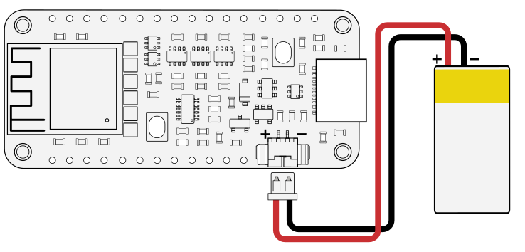
Menggunakan Baterai dengan Konektor 1.25mm PicoBlade#
Opsi 2: Menggunakan Baterai dengan Konektor JST-PH 2.0 mm#
Jika baterai Anda memiliki konektor JST-PH 2.0 mm, Anda akan perlu menggunakan kabel adaptor yang disertakan dalam kit NPG Lite untuk menghubungkannya.
Ikuti langkah-langkah berikut:
Hubungkan baterai ke kabel adaptor dengan konektor JST: Cocokkan warna kabel -
Merah ke MerahdanHitam ke Hitam.Hubungkan kabel adaptor ke NPG Lite menggunakan konektor PicoBlade:
Pastikan Kabel Merah sejajar dengan terminal
Positif (+).Pastikan Kabel Hitam sejajar dengan terminal
Negatif (−)pada konektor NPG Lite.
Ini memastikan baterai terhubung dengan polaritas yang benar dan mencegah kerusakan pada perangkat.
{kind=link}
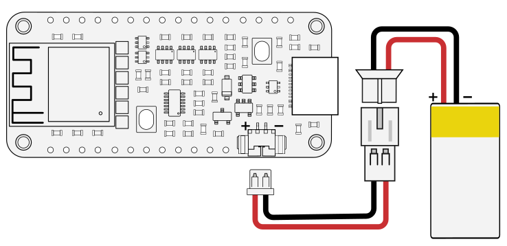
Menggunakan Baterai dengan Konektor JST-PH 2.0mm#
Memverifikasi Polaritas Baterai dengan Multimeter#
Jika Anda tidak yakin tentang polaritas baterai Anda, verifikasi sebelum koneksi:
Atur multimeter Anda untuk mengukur Tegangan DC (V⎓) dan pilih rentang 20V atau lebih tinggi jika memiliki dial manual.
Sentuh probe merah ke terminal logam konektor di mana kabel merah terpasang.
Sentuh probe hitam ke terminal logam di mana kabel hitam terpasang.
Baca tampilan:
Tegangan positif (misalnya, +3.6V hingga +4.2V): Polaritas benar. ✅
Tegangan negatif (misalnya, -4.2V): Polaritas terbalik. ❌
Danger
Pengingat Keamanan: Periksa ulang semua koneksi sebelum menyalakan perangkat. Koneksi baterai yang salah akan merusak perangkat.